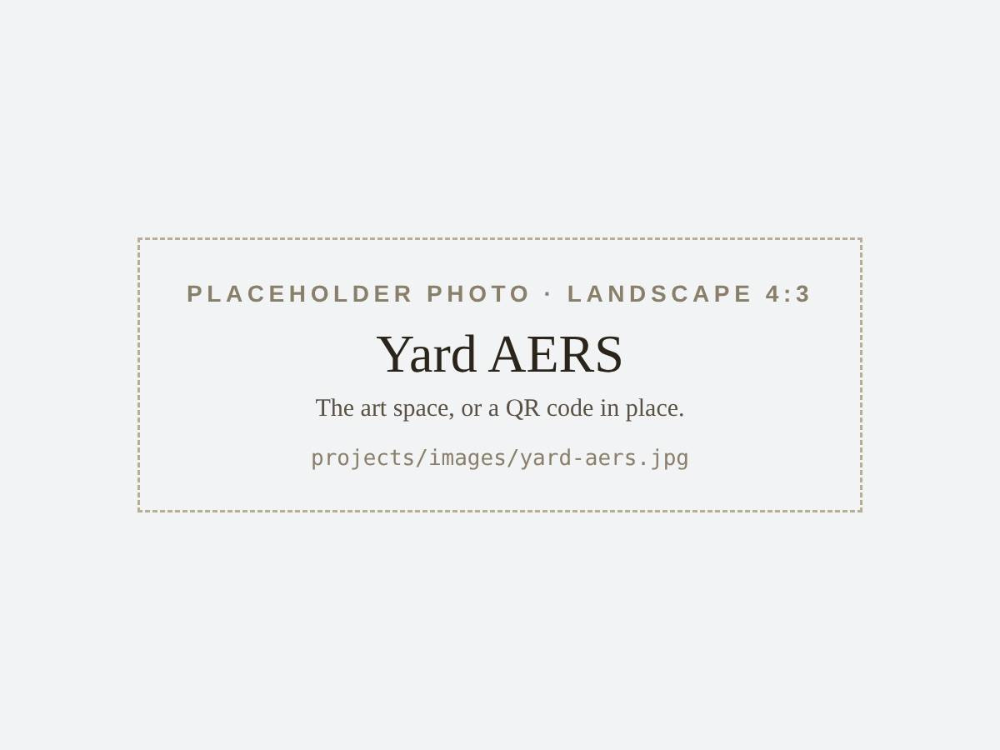

Projects
Things I build outside the lab, mostly around records and listening.
Listening installation
A portable turntable setup, inspired by the jazz kissa of Japan, that I install in different spaces to complement the visual space with an auditory one. Think live concerts, or visual art.
-

From a Fountain
The first version, outdoors at Terman Fountain at Stanford. Records played live for whoever happens by, with a stream for headphones and a letter book for memories.
-
![[TODO: describe the photo]](images/kissa-center-for-creativity.jpg)
Center for Creativity
The same setup, adapted for a volunteer-run arts space in Redwood City. [TODO: one sentence on what changed indoors.]
Center for Creativity [TODO: link to this version]

Research and community
-

Yard AERS
A grad school project in an art space: visitors scan a QR code and answer a short survey on how deeply they engaged with the work.
-
![[TODO: describe the photo]](images/music-for-mental-health.jpg)
Music for Mental Health
Community concerts I organized in Chico from 2021 to 2023, raising over $5,000 for local mental health nonprofits.
Records and tools
-
![[TODO: describe the photo]](images/house-collection.jpg)
House Collection
My record shelf, synced from Discogs. Follow a label through the years, pull a record at random, or look up the tempo of the tracks I play.
-
![[TODO: describe the photo]](images/not-quite-my-tempo.jpg)
Not Quite My Tempo
Hold your phone up to the music and it shows the tempo, the key with mixing hints, and the loudness. There’s a tuner for guitar and bass, too.